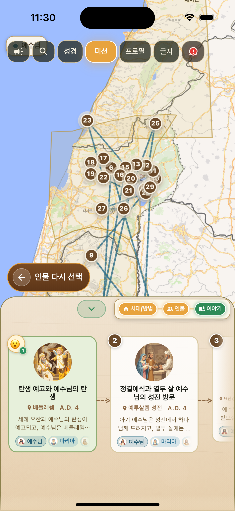
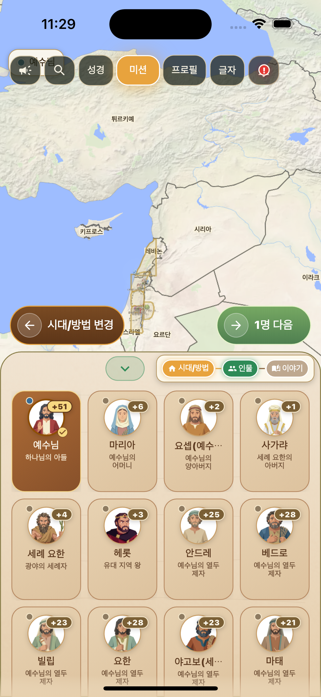
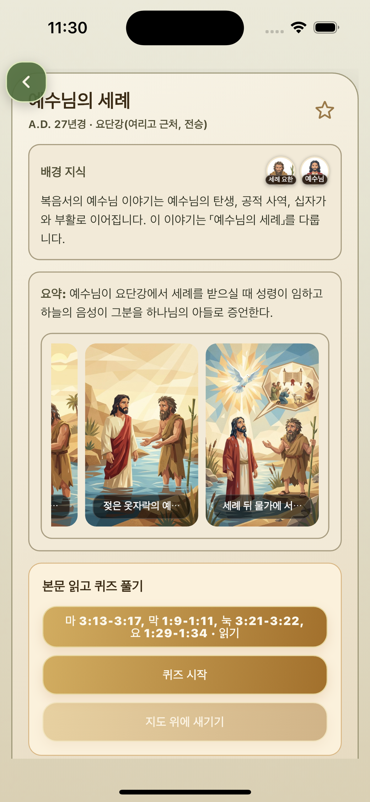
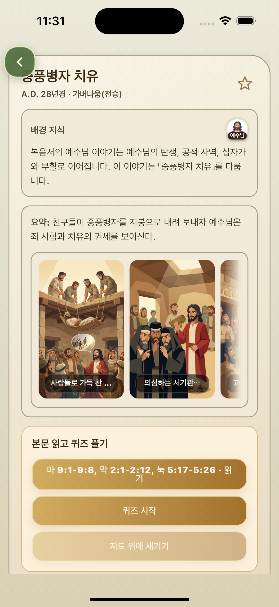
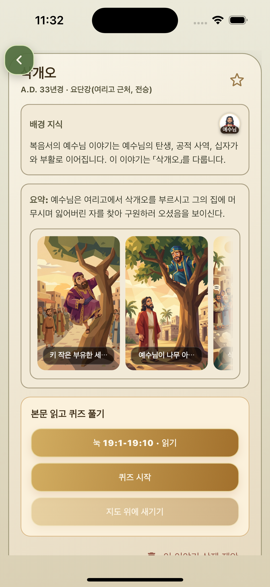

예수님 인물 선택
예수님을 인물로 선택해 복음서의 주요 사건을 한 흐름으로 모아 봅니다.
Jesus Ministry Map
갈릴리에서 시작된 사역과 여러 만남, 비유와 기적, 예루살렘을 향한 길을 지도 위의 사건 흐름으로 따라갑니다.

Ministry Flow
예수님의 사역은 갈릴리, 사마리아, 유대와 예루살렘을 오가며 이어집니다. 지도 위에서 보면 각 사건이 어느 지역의 맥락 속에 놓여 있는지 이해하기 쉽습니다.
예수님을 인물로 선택해 복음서의 주요 사건을 한 흐름으로 모아 봅니다.
나사렛, 가버나움, 갈릴리 호수, 사마리아, 베다니, 예루살렘 등 주요 장소를 지도에서 확인합니다.
세례, 가르침, 치유, 비유, 십자가로 이어지는 사건을 열어 본문과 묵상으로 연결합니다.
복음서 본문을 읽고, 퀴즈로 사건을 정리한 뒤 예수님의 사역 앞에서 느낀 마음을 남깁니다.
Ministry Screens
인물 선택 화면에서 예수님을 고르고, 이어지는 지도 화면에서 복음서의 주요 사건이 어느 지역의 흐름 속에 놓이는지 확인합니다.

Event Details
세례, 치유, 만남의 사건을 지도 흐름 안에서 살펴보며 예수님의 사역이 사람들에게 어떻게 다가갔는지 확인합니다.

요단강에서 시작되는 예수님의 사역을 지도 위치와 함께 보면 복음서의 시작 흐름이 더 또렷해집니다.

병든 사람을 고치시고 죄 사함을 선포하시는 장면은 예수님의 권세와 긍휼을 함께 보여줍니다.

여리고에서 삭개오를 부르시는 장면은 잃어버린 사람을 찾아오시는 예수님의 마음을 잘 보여줍니다.
Study Flow
지도에서 예수님의 사역 장소와 사건을 확인한 뒤, 성경 본문을 읽고 퀴즈로 이해를 점검하며 마지막에는 그 사건 앞에서 느낀 감정을 남깁니다.

사건과 연결된 말씀을 읽으며 지도에서 본 장면을 본문으로 다시 확인합니다.

읽은 내용을 간단한 질문으로 확인하며 사건의 핵심을 자연스럽게 정리합니다.

말씀을 읽고 남은 마음을 선택해 지도와 나의 묵상 흐름 안에 기록합니다.
Google Play
안드로이드 앱은 현재 배포 준비중입니다.